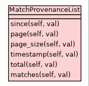

Class MatchProvenanceList
source code

Class to represent a list of matches, as a response to an API request for match procenances
matching a specified set of criteria.
It reflects back the original parameters of the request, and includes a list of serialised (to dict objects)
MatchProvenance objects
{
"since" : "<date from which results start in the form YYYY-MM-DDThh:mm:ssZ>",
"page" : "<page number of results>,
"pageSize" : "<number of results per page>,
"timestamp" : "<timestamp of this request in the form YYYY-MM-DDThh:mm:ssZ>",
"total" : "<total number of results at this time>",
"matches" : [
"<ordered list of MatchProvenance JSON objects>"
]
}
Set the requested since date of the request
- Parameters:
val - the requested since date of the request - Decorators:
|
Set the requested page of the response
- Parameters:
val - the requested page of the response - Decorators:
|
Set the requested page size
- Parameters:
val - the requested page size - Decorators:
|
Set the timestamp of the request
- Parameters:
val - the timestamp of the request in the form YYYY-MM-DDTHH:MM:SSZ - Decorators:
|
Set the number of available notifications
- Parameters:
val - the number of available notifications - Decorators:
|
Set the list of matches for this response
- Parameters:
val - the list of matches - Decorators:
|